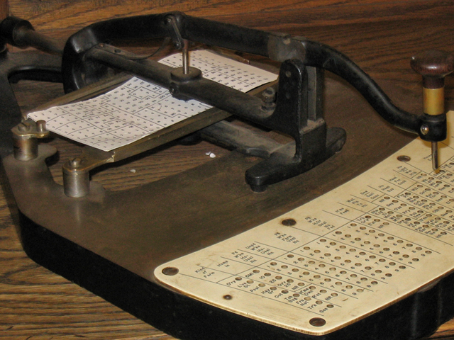
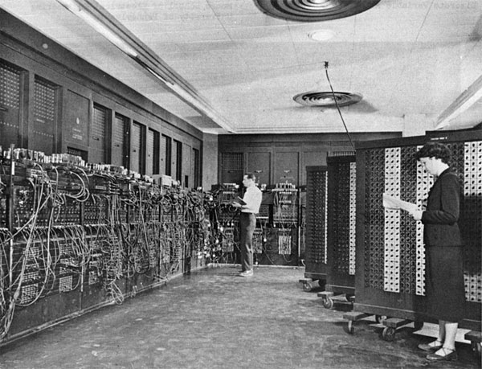
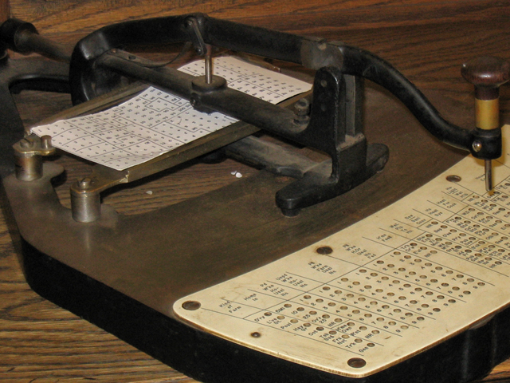
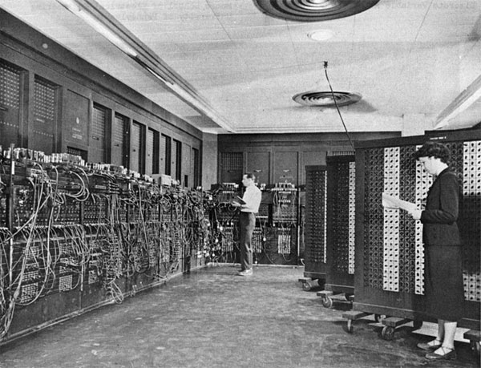
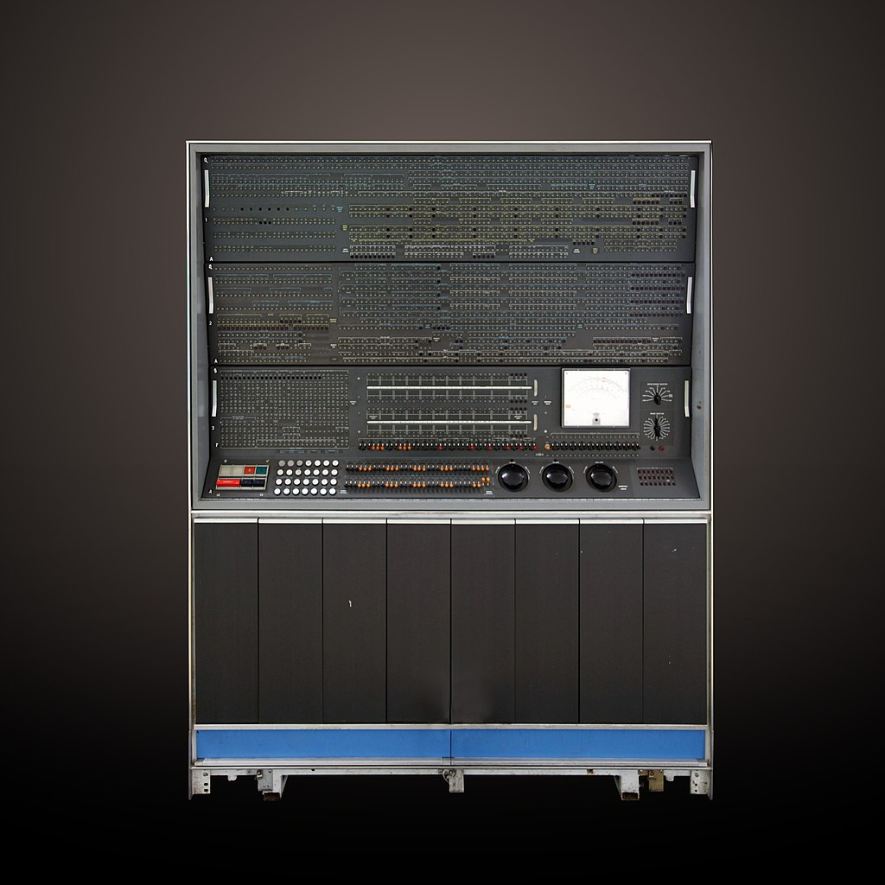
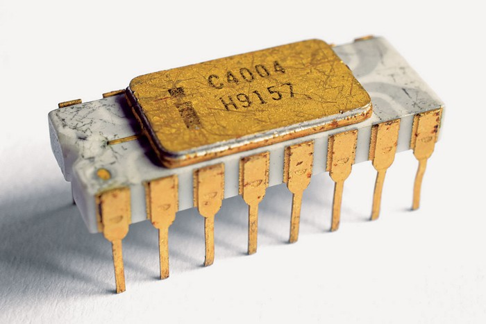

In The Beginning...
The history of computers starts out about 2000 years ago, with the birth of the abacus. When the beads on the abacus are moved around, according to programming rules memorized by the user, all regular arithmetic problems can be done. In 1671, Gottfried Wilhelm von Leibniz invented a computer that was built in 1694. It could add, and, after changing some things around, multiply. About a century later Thomas of Colmar created the first successful mechanical calculator that could add, subtract, multiply, and divide.
Source: GIPHY
Other Memorable Events...
- In 1812, Babbage realized that many long calculations were really a series of predictable actions that were constantly repeated. He began to design an automatic mechanical calculating machine, which he called a difference engine.
- Herman Hollerith and James Powers made a step towards automated computing with the development of punched cards. Reading errors were reduced dramatically, workflow increased, and stacks of punched cards could be used as memory of almost unlimited size. For more than 50 years, punched card machines did most of the world's first business computing.
- The start of World War II produced a large need for computer capacity. In 1942, John P. Eckert and John W. Mauchly decided to build a high-speed electronic computer to do the job. Known as ENIAC (Electronic Numerical Integrator And Computer), this machine could multiply two numbers at a rate of 300 per second.
- Early in the 50's two important engineering discoveries changed the image of the computer field - Magnetic Core Memory and Transistor - Circuit Elements. These technical discoveries quickly found their way into computers. Such computers were mostly found in large computer centers operated by industry, government, and private laboratories.
- In the 1960's, efforts to design and develop the fastest possible computer with the greatest capacity reached a turning point with the Stretch computer by IBM. Stretch was made with the fastest access time, and total capacity in the vicinity of 100,000,000 words.
- Many companies, some new to the computer field, introduced programmable mini computers supplied with software packages in the 1970’s. The "shrinking" trend continued with the introduction of personal computers (PC's), which are programmable machines small enough and inexpensive enough to be purchased and used by individuals. Many companies, such as Apple Computer and Radio Shack introduced very successful PCs in the 1970’s.
- By the late 1980’s, some personal computers were run by microprocessors that, handling 32 bits of data at a time, could process about 4,000,000 instructions per second.
- Computer networking, e-mail, the Internet, and electronic publishing are just a few of the applications that have grown in recent years. Computers continue to decrease in price, offering the promise that soon, “computers will reside in most homes, offices, and schools”.
 



 
Great Computer Quotes...

"Men are from Mars, Women are from Venus, Computers are from Hell."
Author Unknown
"Give a person a fish and you feed them for a day;
teach that person to use the internet and they won't bother you for weeks."
Author Unknown
"To err is human, but to really foul things up requires a computer."
Farmer's Almanac, 1972
20 Computer Facts You Probably Didn't Know...
Computers are a critical part of our daily lives. In the last two decades, computers have revolutionized business, relationships, and shopping, and given rise to a whole new era of marketing and connection. By now, you probably know a computer is an incredible machine, but did you know just how amazing? Here’s a list of the top 20 computer facts you might not know:
- The First Computer Weighed More Than 27 Tons
- Her name was ENIAC, and she took up a modest 1800 square feet of space.
- About 90% of the World’s Currency Only Exists on Computers
- This means only about 10% of the global currency is actually cash.
- The First Computer Mouse was Made of Wood
- Doug Engelbart invented it in 1964.
- Doug Engelbart invented it in 1964.
- This gives new weight to the importance of anti-virus and anti-malware software, and excellent virus removal services
- The First Known Computer Programmer was a Woman
- The First Known Computer Programmer was a Woman
- Some of the Biggest Computer Brands Started in Garages
- This is true for Apple, Microsoft, and HP.
- People Blink Less When They Use Computers
- While the average person blinks about 20 times a minute under normal circumstances, people on computers only blink about seven times a minute.
- Hackers Write About 6,000 New Viruses Each Month
- These viruses are designed to target a wide selection of operating systems, so learning to avoid viruses and malware is essential!
- More Than 80% of Daily Emails in the U.S. are Spam
- To keep your data safe, delete these emails immediately and don’t click any links or attachments they might contain.
- MyDoom is the Most Expensive Computer Virus in History
- The virus cost an estimated $38.5 billion in damage and came about in January of 2006. Shortly after that, it earned a name for itself as the fastest-spreading virus ever.
- The Parts for the Modern Computer Were First Invented in 1833
- A man named Charles Babbage put them together, but the first modern computer came about 120 years later.
- The First Gigabyte Drive Cost $40,000
- It was released in 1980 and weighed 550 lbs. How’s that for a portable drive?
- The Case of the First Macintosh Computer Includes 47 Signatures
- On the inside of the device, Macintosh’s entire 1982 division signed the case.
- The Worst U.S. Security Breach of All Time Happened Because of a USB Stick
- Someone found the stick (which a foreign intelligence agency infected) in a parking lot and plugged it into their computer. The computer had links to the U.S. entral Command. The attack happened in 2008 and resulted in the theft of thousands of classified and unclassified documents. The Pentagon spent about 14 months cleaning up the damage from the worm.
- A Single Computer Catches 50% of all Wikipedia Vandalism
- This computer has a 90% accuracy rate.
- Computers Sort 95% of Mail
- The U.S. Postal Service still hires individual employees to sort through addresses that are too sloppy for computers to make sense of.
- MIT Has Computers That can Detect Fake Smiles
- These computers can tell between genuine smiles and frustrated smiles.
- Computers Might Soon be Able to Tell What Dogs Think
- These computers are under development by a Scandinavian company. A prototype is purported to be available.
- Russia Engineered a Computer That Ran on Water
- The computer was built in 1936 and was meant to solve partial differential equations.
- Disney Fired John Lasseter for Pushing Computer Animation
- He’s now the CCO of Pixar.
HTML Feature...
Scrolling Text With Marquee Tag:
The HTML feature I decided to use is the marquee tag which is used to create scrolling text in HTML. The text can be modified to scroll horizontally left to right, or right to left, or vertically from top to bottom or bottom to top. As HTML5 prioritizes semantics above presentation, the < marquee > element is considered obsolete and not regarded as best practice for creating scrolling text in HTML. The recommendation is now to use CSS animations or CSS marquees. Because of backward compatibility, the majority of browsers still enable scrolling text in HTML. Below is a poem called If Dr. Seuss Were A Technical Writer by Anonymous.
Now that we have learned CSS, here is the same feature done with CSS:
CSS Feature...
CSS Animations:
An animation lets an element gradually change from one style to another. You can change as many CSS properties you want, as many times as you want. To use CSS animation, you must first specify some keyframes for the animation. Keyframes hold what styles the element will have at certain times.